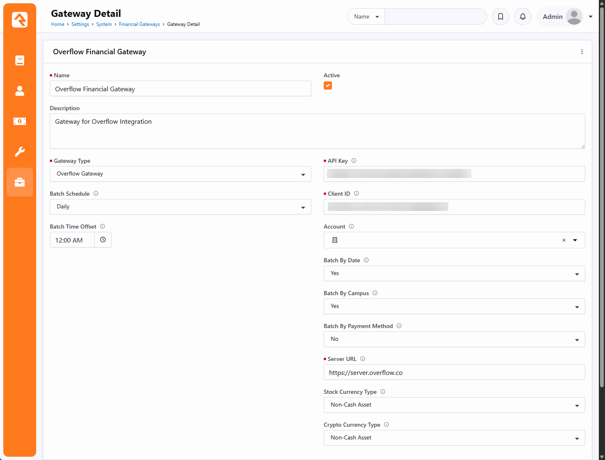
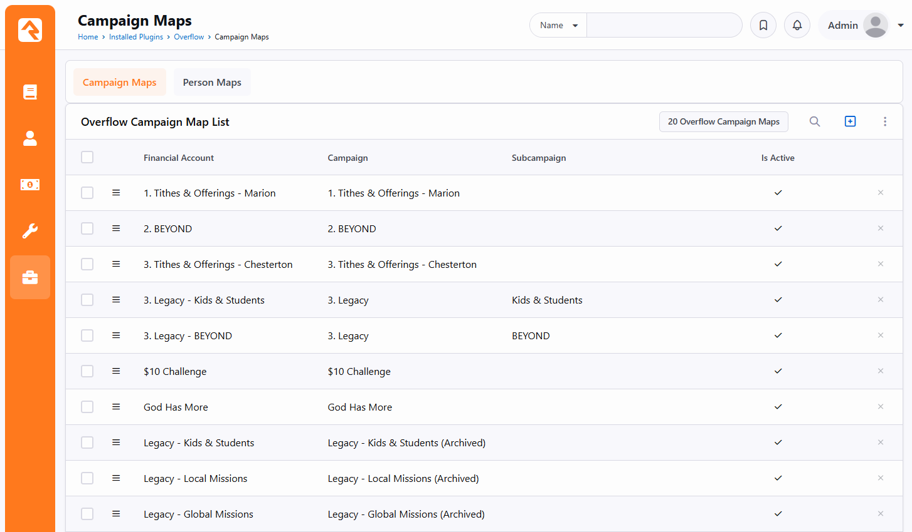
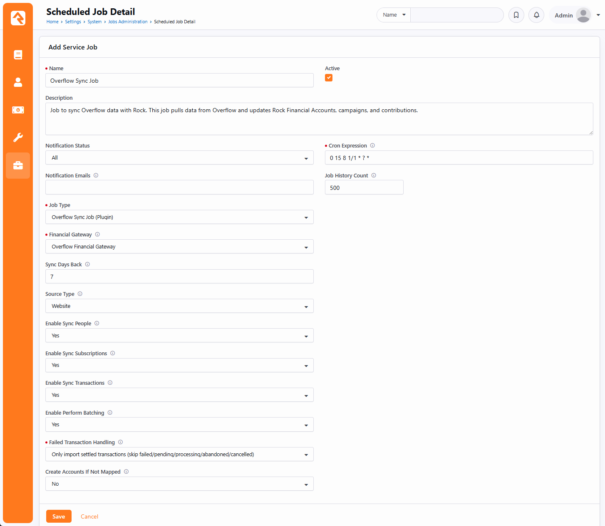

Configure
Setting Up Overflow Gateway
After installing, there are four things to configure — all in the Rock admin. Connect the gateway, map your campaigns to Rock accounts, tune the sync job, and run a test. Work through them in order; only the gateway connection is strictly required to get a first sync going.
Step A — Connect the Gateway Required
Go to Admin Tools → System Settings → Financial Gateways, open “Overflow Financial Gateway”, and click Edit.

| Setting | What to enter |
|---|---|
| API Key | From your Overflow account. Required. |
| Client ID | From your Overflow account. Required. |
| Server URL | Defaults to https://server.overflow.co (production). Leave this unless Overflow tells you otherwise. |
| Account | The Rock financial account used as a fallback for any contribution whose campaign isn’t mapped. Optional but recommended. |
| Batch By Date | Group synced transactions into batches by date. Default on. |
| Batch By Campus | Group batches by campus. Default on. |
| Batch By Payment Method | Group batches by payment method. Default off. |
| Stock Currency Type | Currency type assigned to stock gifts. Defaults to Non-Cash. |
| Crypto Currency Type | Currency type assigned to crypto gifts. Leave blank to use the underlying payment method (Card/ACH). |
Make sure the gateway is set to Active before saving.
Step B — Map Campaigns to Accounts
Go to /overflow/campaign-maps and add a map for each Overflow campaign (and
subcampaign, if you use them), linking each one to the Rock Financial Account
its gifts should land in.

- Mapped campaigns — gifts post to the linked account.
- Unmapped campaigns — fall back to the gateway’s default Account (Step A). If no default is set, those gifts are skipped and listed in the run summary’s Skip Reason Breakdown.
- Auto-create option — if you turn on Create Accounts If Not Mapped on the job (Step C), an unmapped campaign instead auto-creates a Rock account and its map. See How the Sync Works for details.
The companion Person Maps page (/overflow/person-maps) lists
the links between Overflow donors and Rock people. These are created automatically by the
sync — the page is for inspection, not manual setup.
Step C — Configure the Sync Job
Go to Admin Tools → System Settings → Jobs Administration, open “Overflow Sync Job”, and click Edit.

| Setting | Default | What it does |
|---|---|---|
| Financial Gateway | Overflow gateway | Pre-set to the gateway from Step A. Leave as is. |
| Sync Days Back | 30 | Rolling window for the transactions stage. People and subscriptions always pull in full, regardless of this value. |
| Source Type | Website | The transaction source recorded on synced gifts. |
| Sync People | On | Toggle the donor-sync stage. |
| Sync Subscriptions | On | Toggle the recurring-gift stage. |
| Sync Transactions | On | Toggle the contribution stage. |
| Perform Batching | On | Toggle grouping synced transactions into batches. |
| Failed Transaction Handling | 1 | How non-settled / failed gifts are handled. Default 1 = only import settled. See Troubleshooting for all four modes. |
| Create Accounts If Not Mapped | No | When Yes, an unmapped campaign auto-creates a Rock account + map instead of falling back or skipping. |
| Schedule | Daily 8:15 AM | When the job runs. Adjust to whatever cadence fits your giving volume. |
Step D — Run a Test
- On the Overflow Sync Job, click Run Now.
- When it finishes, open the Result / summary message.
- Read the per-stage counts — created / updated / skipped — plus the Accounts Created count and the Skip Reason Breakdown. The breakdown lists campaign and donor names with dollar amounts, so you can see exactly what didn’t map and why.
- If something skipped that you expected to import, add the missing campaign map (Step B) and run again.
Setup Checklist
/overflowloads with Campaign Maps + Person Maps tabs.- Overflow Financial Gateway has API Key + Client ID and is Active.
- At least your main campaigns are mapped to Rock accounts (or a default account is set).
- The Overflow Sync Job’s gateway, window, and schedule are set.
- A test run completed and the summary looks right.
Next: read How the Sync Works to understand each stage in depth.